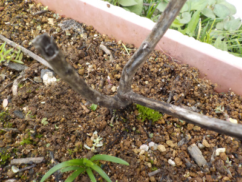
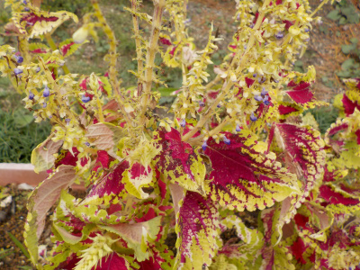
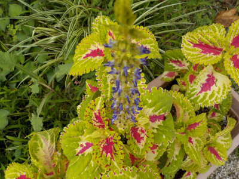
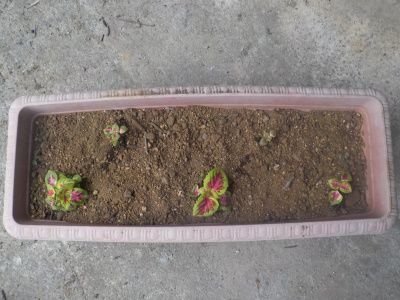
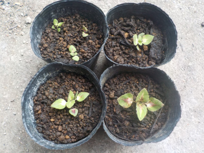
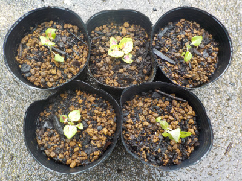
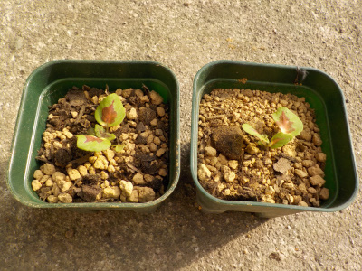
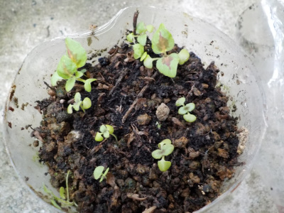
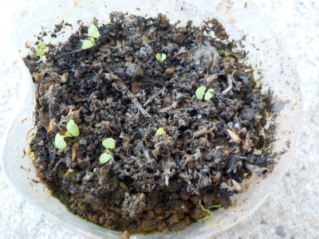

今年はコリウスが発芽しませんでした。
2022/09/06

去年のコリウスの枯草です。この周りに種が落ちて、発芽してくれると期待していたんですがダメでした。
我が家のコリウスが絶えてしまった。
今ホームセンターで激安で販売しているコリウスを買って種を採取すればローコストですが、コリウスがとっても欲しいってわけではないので、無くてもいいかな。
2022/09/06

去年のコリウスの枯草です。この周りに種が落ちて、発芽してくれると期待していたんですがダメでした。
我が家のコリウスが絶えてしまった。
今ホームセンターで激安で販売しているコリウスを買って種を採取すればローコストですが、コリウスがとっても欲しいってわけではないので、無くてもいいかな。
2021/11/13

今年もコリウスの種を採取しようかと思ったんですが、ほとんど落ちてありませんでした。
ちょっとだったら取らなくていいかな。
運がよければ落ちた種が芽を出すでしょう。悪かったら諦めます。コリウスが絶対必要ってことはないので。
2021/09/05

コリウスの花が咲きました。花が咲くと派手になっていいですね。
去年種を採って蒔いたコリウスなので、親と違う色になるんじゃないかと楽しみにしていたんですが、同じでした。
これはこれで綺麗なので、まあいいかな。
今年も種を採って来年蒔こうと思うので、花の受粉作業をしました。
2021/06/26

ポットで少し大きくした苗をプランターに植えました。
手前の2つは植えやすかったですが、残りは小さくて植えにくかったです。
小さい苗は大雨がふったら倒れそうです。

ペットボトルの苗床からポットに移しました。種蒔きで育った苗はこれでおしまいです。
大きくなって植えやすくなったらプランターに植えようと思います。
2021/06/13

ペットボトルに種蒔きしたコリウスが大きくなったので、ポットに移植しました。
以前に2本移植していたので、合計7本になります。
大きくなったら何処に植えようかな。
2021/05/23

ちょっと大きくなった2本を鉢上げしました。
種を採った株は緑の葉っぱで中央が赤だったので、同じようなコリウスになりそうです。
まったく同じだったらちょっとつまらないかな。
2021/05/15

まだ小さな葉っぱですが、模様が出ました。
間違いなくコリウスの葉っぱですね。
実生のコリウスはどんなのになるんでしょうね。楽しみです。
2021/04/24

コリウスの花柄をまいたところから芽が出ました。
穂に種が入っている感じはなかったんですが、あったんですね。
種がめちゃくちゃ小さかったのかな。
成長してどんな葉色や形になるかわかりませんが、今年は苗を買わないでコレを育てようと思っています。
2021/03/28

去年採ったコリウスの花柄をペットボトルに蒔きました。
蒔いたといっても湿った土の上に乗せただけです。
花柄に種がある感じはしないんですが、ひょっとしたら何粒かあるかもしれないので挑戦しました。
花柄がしっかり枯れちゃって、ボロボロになってホコリみたいです。
コリウスは大葉みたいな花ですが、大葉のような大きな穂ができません。